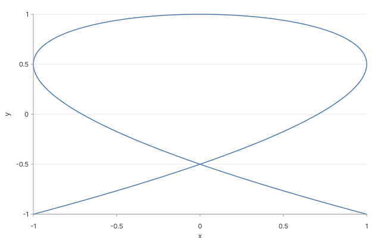

Lissajous curve
x = sin(3t), y = cos(2t) sampled 400 times on
[0, 2π]. Same "function" data shape as
the sine wave, just with a parameter block plus
xExpr / yExpr instead of a single
expr.

Spec
{
"version": "glyph/0.1",
"data": {
"function": {
"shape": "function",
"parameter": { "name": "t", "min": 0, "max": 6.283185307179586, "samples": 400 },
"xExpr": "sin(3*t)",
"yExpr": "cos(2*t)"
}
},
"layers": [
{
"mark": "point",
"encoding": {
"x": {
"field": "x",
"type": "quantitative",
"scale": { "domain": [-1.2, 1.2] }
},
"y": {
"field": "y",
"type": "quantitative",
"scale": { "domain": [-1.2, 1.2] }
}
}
}
]
}
Why
mark: "point" instead of
"line"? The line mark sorts samples by
x before stroking, which collapses a closed parametric
curve into a zigzag (the curve revisits the same x values). Points
dodge the bug; a one-line fix to buildLines is queued
as a follow-up. (Math PR2's parameter block ships today
regardless.)